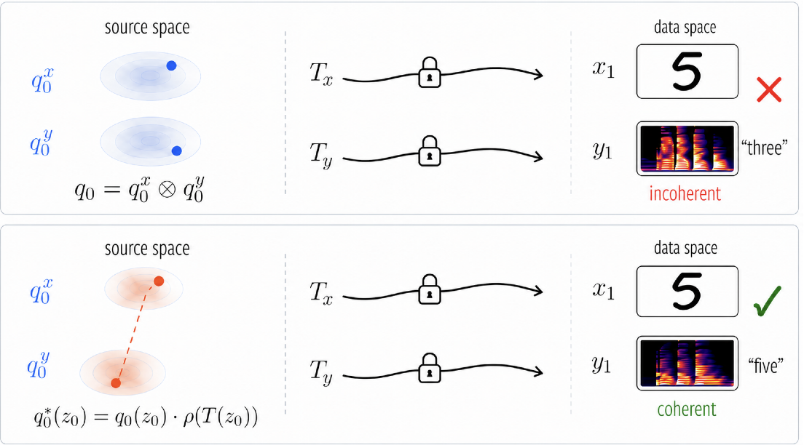
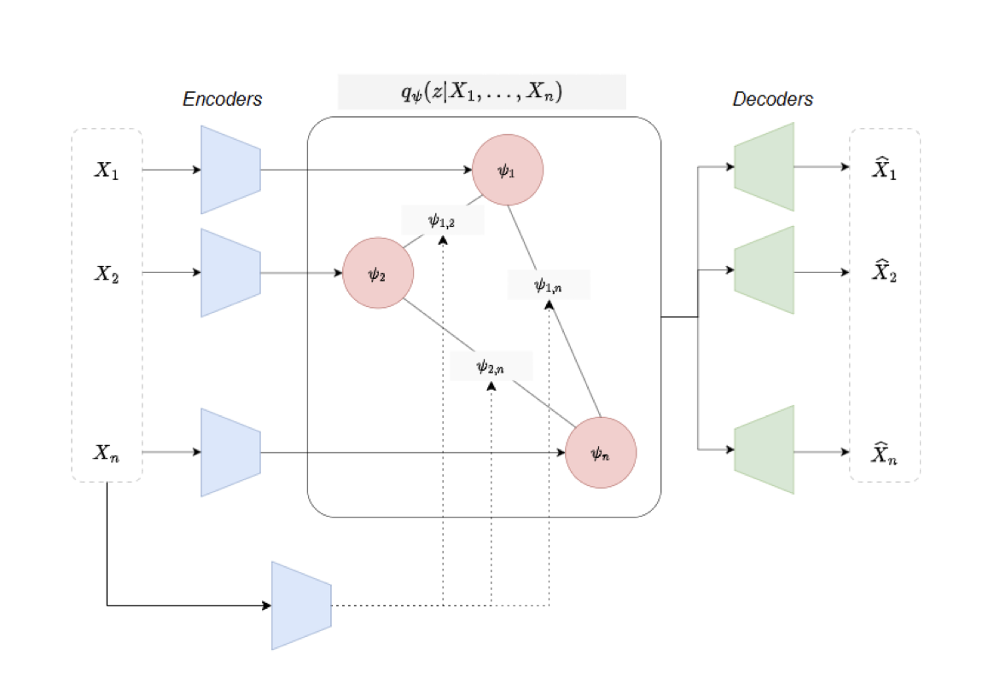

Applied AI Engineer
I build AI systems for real-world problems. My work starts with understanding the use case and its constraints, then taking the solution through development, deployment, and adoption. At Michelin, I lead applied AI projects across use cases including mining operations and aircraft trajectory optimization.
I'm also the founder of MAIR (Moroccans in AI Research), a global network driving collaboration, mentorship, and visibility for Moroccan AI talent worldwide.
I'm the CEO and co-founder of ChoufLiya, a B2B marketplace connecting wholesale buyers and suppliers across Morocco.
I hold a Master of Engineering from IMT Atlantique in France and a B.Sc. in Pure Mathematics from the University of Western Brittany. My work combines mathematics with practical engineering.
Publications
My research interests include generative modeling, geometric deep learning, and uncertainty quantification.




Teaching
- Advanced Deep Learning — 5A Polytech Clermont-Ferrand · 2024–2025
- Statistics and Data Analysis for Performance Analysts — Michelin R&D Center Ladoux · 2023–2025
Student supervision
- 2024–2025 — Rémy Vallot, PhD Candidate · ENS Paris-Saclay
Nonlinear solver acceleration using ML methods - 2023 — Moad Yachouti, Engineering Intern · Université Paris-Saclay (now PhD at Polytechnique)
Explainable AI in predictive ML models
Writing & talks
- Medium article: "Why Moroccan AI Researchers Need a Community, And How MAIR Is Building It" Read article
- Radio talk: AI Research in Morocco. Listen to the talk